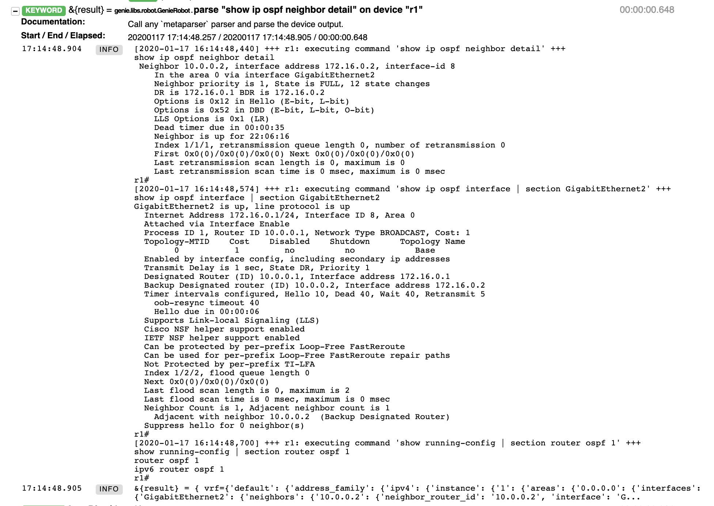
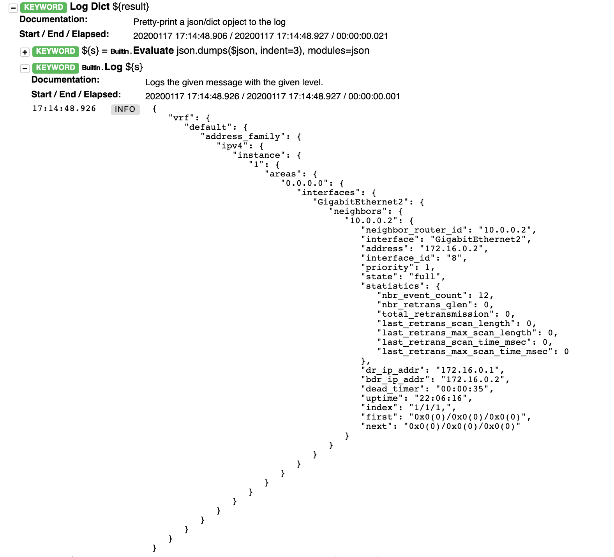
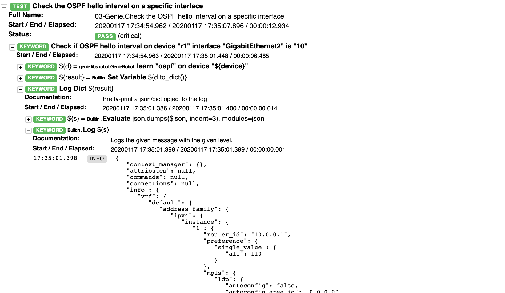

Parsing with pyATS Genie
CXTA leverages Cisco's pyATS framework for most of its device-related keywords, a testing framework used by Cisco's core product development organization.
pyATS is available on DevNet and is free to use. The libraries available also include Robotframework keywords, some of which we've already used (like connect to device or use testbed), and in this exercise we want to demonstrate Genie, which deserves its own chapter.
Please change to the 03-genie directory and examine the 03-genie.robot test suite, which contains two test cases which we explain separately:
1 2 | cd ../03-genie cat 03-genie.robot |
Parsing a Specific Command
First we want to perform a similar task as shown before: Parsing the OSPF neighbor information. This is what the first test case in the 03-parsing-genie.robot file does:
1 2 3 4 5 6 7 8 9 10 | Get the ospf neighbor ID from R1 using Genie keywords (pyats) # runs a command through the genie parser, it returns a dictionary &{result}= parse "show ip ospf neighbor detail" on device "r1" Log Dict ${result} ${nbr_id}= Get Value From Json ${result} $..neighbors.*.neighbor_router_id Should be Equal as Strings ${nbr_id}[0] 10.0.0.2 ${nbr_state}= Get Value From Json ${result} $..neighbors.*.state Should be Equal as Strings ${nbr_state}[0] full |
Please run the test (either run the whole file, or just run this one using robot -t "Get the ospf*" 03-genie.robot) and open the resulting log.html in your browser.
Please first expand on the parse "show ip ospf neighbor detail" on device "r1" keyword.
You'll notice that the Genie library uses multiple commands on the device to collect the required information. The inner workings of how this is achieved is fully transparent, a big time saver when dealing with (network) devices:

As in the TextFSM examples earlier, the result is returned as a dictionary, and line 4 (of the code snippet above) dumps the contents into log.html:

The data is structured according to Genie datamodels, which are common across device types and OS (IOS-XE, IOS-XR, etc.).
Lines 6 and 9 now extract specific values from this dictionary and compare it with their expected values.
You see a notation at the end of each line:
$..neighbors.*.neighbor_router_id
and
$..neighbors.*.state
This is called JSONPath. It is a notation that allows the user to parse a, potentially complex, JSON structure (Dictionary).
In JSONPath, there are specific symbols called operators and functions that help to specify which key or keys you are interested in. This notation is similar to XPATH or CSS Selectors for html files. Here are some of the operators used in this example:
| Operator | Function |
|---|---|
| $ | This specifies the root element of the JSON structure. It is used to indicate the start of a query |
| .. | This performs a "deep scan". Which essentially says, "Look anywhere in the json structure for what comes next" |
| .name | Dot notated child. This operator says that we are interested in a key with this name at this location. |
| * | Wildcard, available anywhere a name or number is required. |
For example, in the JSON structure in the picture above: Here is a table of JSON paths to results for this output:
| JSONPath | Result |
|---|---|
| $..interface | ["GigabitEthernet2"] |
| $..statistics.total_retransmission | [1] |
| $..neighbors.*.dr_ip_addr | ["172.16.0.2"] |
| $..neighbors.*.neighbor_router_id | ["10.0.0.2"] |
| $..neighbors.*.state | ["full"] |
A few notes:
- JSONPath always returns a list of results, even when there is only one result, as JSONPaths do not always need to return a single result.
- The wildcard character is used in the final 3 examples in the table to indicate that, if there were more than 1 neighbor, get all neighbors' property. If there were two neighbors, for example, the results for the final three options would have two values in them.
To learn more about JSONPath, check out https://github.com/json-path/JsonPath
Learning a Feature
Genie also offers a very powerful mechanism to gather all sorts of information about a specific feature configured and running on a device.
Let's use this approach now to verify the hello interval present on the routers, checking each of the two routers individually.
Please examine the 2nd test case in 03-genie.robot:
1 2 3 4 5 6 7 8 9 10 11 12 13 14 15 16 17 | Check OSPF hello interval # we now use a keyword specified in the keyword section of this robot file below # in the keyword the user can specify the device name and the interface, so the # very same check can be reused Check if OSPF hello interval on device "r1" interface "GigabitEthernet2" is "10" Check if OSPF hello interval on device "r2" interface "GigabitEthernet2" is "10" *** Keywords *** Check if OSPF hello interval on device "${device}" interface "${interface}" is "${interval}" # uses a pyats keyword to learn operational information on ospf # the keyword runs various ospf commands as per the platforms model in genie ${d}= learn "ospf" on device "${device}" # the learn keyword returns a python object, convert this into a dict ${result}= Set Variable ${d.to_dict()} Log Dict ${result} ${v}= Get Value From Json ${result} $..interfaces.${interface}.hello_interval Should be equal as numbers ${v[0]} ${interval} |
Instead of repeating things twice for r1 and r2, we introduce a keyword (line 9) with parameters, and call this keyword for each router (5+6).
Within the keyword, we call the learn "ospf" on device "${device}" keyword, convert the result to a dictionary, and again use a Json filter construct to retrieve the value we're interested in. Please note the use of the parameters defined in the keyword (${device}, ${interface} and ${interval}).
Please run the test case (robot 03-genie.robot), examine the log.html and take a special look at the Log Dict output which contains the full information returned by learn "ospf".. (also here).
We hope you'll be amazed by the wealth of information available at your fingertips.

Conclusion
We hope you have enjoyed these exercises. Please visit us to discuss how Cisco CX can help you in your test automation journey!